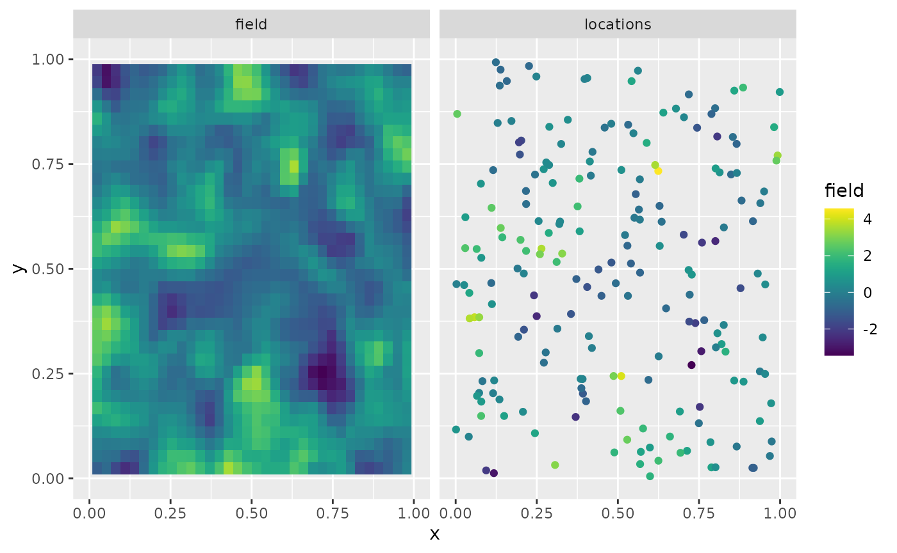

Operator-based rational approximation
David Bolin and Alexandre B. Simas
Created: 2019-08-07. Last modified: 2024-05-18.
Source:vignettes/rspde_base.Rmd
rspde_base.RmdIntroduction
Several popular Gaussian random field models can be represented as solutions to stochastic partial differential equations (SPDEs) of the form \[ L^{\beta} (\tau u) = \mathcal{W}. \]
Here \(\mathcal{W}\) is Gaussian white noise, \(L\) is a second-order differential operator, the fractional power \(\beta>0\) determines the smoothness of \(u\), and \(\tau>0\) scales the variance of \(u\).
If \(2\beta\) is an integer and if the domain \(\mathcal{D}\) where the model is defined is bounded, then \(u\) can be approximated by a Gaussian Markov random field (GMRF) \(\boldsymbol{\mathrm{u}}\) via a finite element method (FEM) for the SPDE. Specifically, the approximation can be written as \[ u_h(s) = \sum_{i=1}^n u_i \varphi_i(s). \] Here \(\{\varphi_i\}\) are piecewise linear basis functions defined by some triangulation of \(\mathcal{D}\) and the vector of weights \(\boldsymbol{\mathrm{u}} = (u_1,\ldots,u_n)^T\) is normally distributed, \(N(\boldsymbol{\mathrm{u}},\tilde{\boldsymbol{\mathrm{Q}}}^{-1})\), where \(\tilde{\boldsymbol{\mathrm{Q}}}\) is sparse. See Lindgren, Rue, and Lindström (2011) for further details.
In this vignette we focus on the operator-based rational approximation. This approach, introduced by Bolin and Kirchner (2020), results in an approximation of the original SPDE which is of the form \(P_l x = P_r \mathcal{W}\), where \(P_l\) and \(P_r\) are non-fractional operators defined in terms of polynomials \(p_l\) and \(p_r\). The order of \(p_r\) is given by \(m\) and the order of \(p_l\) is \(m + m_{\beta}\) where \(m_{\beta}\) is the integer part of \(\beta\) if \(\beta>1\) and \(m_{\beta} = 1\) otherwise.
The combination of the rational approximation of the operator with the FEM discretization yields an approximation \(u_h\) of \(u\) on the basis expansion form above. The difference to the non-fractional case is that the vector of stochastic weights now is \(\boldsymbol{\mathrm{u}} \sim N(\boldsymbol{\mathrm{0}},\boldsymbol{\mathrm{P}}_r\boldsymbol{\mathrm{Q}}^{-1}\boldsymbol{\mathrm{P}}_r^T)\) where \(\boldsymbol{\mathrm{Q}}\) and \(\boldsymbol{\mathrm{P}}_r\) are sparse matrices. Alternatively, \(\boldsymbol{\mathrm{u}}\) can be represented as \(\boldsymbol{\mathrm{u}} = \boldsymbol{\mathrm{P}}_r \boldsymbol{\mathrm{x}}\) where \(\boldsymbol{\mathrm{x}} \sim N(\boldsymbol{\mathrm{0}},\boldsymbol{\mathrm{Q}}^{-1})\), which means that the discrete approximation is a latent GMRF. This can be used for computationally efficient inference and simulation. See Bolin and Kirchner (2020) for further details.
Using the package to perform operator-based rational approximations
The main purpose of the rSPDE package is to provide
functions for creating the rational approximation. In this vignette we
focus on the operator-based rational approximation, which means
assembling the matrices \(\boldsymbol{\mathrm{Q}}\) and \(\boldsymbol{\mathrm{P}}_r\). There are
three functions for computing the rational approximation. The most
general function is fractional.operators(), which works for
a wide class of models with a general differential operator \(L\). For the stationary Matérn case, where
\(L = \kappa^2 - \Delta\), the function
matern.operators() provides a simplified model
specification. For the generalized non-stationary Matérn model, defined
through the SPDE \[
(\kappa(s)^2 - \Delta)^\beta (\tau(s)u(s)) = \mathcal{W},
\] the function spde.matern.operators() can be
used.
For the alternative covariance-based rational approximation, we refer the reader to the Rational approximation with the rSPDE package vignette. It is worth noting that the covariance-based rational approximation only applies to fractional SPDE models with Gaussian noise, whereas the operator-based rational approximation can be used for more general models such as the models driven by type-G Lévy noise considered in Wallin and Bolin (2015), Bolin (2013), and Asar et al. (2020).
Once the approximation has been constructed, it can be included
manually in statistical models just as for the non-fractional case. The
package has some built-in functions for basic use of the approximation,
such as simulate() which can be applied for simulation of
the field. There are also functions for likelihood evaluation and
kriging prediction for geostatistical models with Gaussian measurement
noise. In the following sections, we illustrate the usage of these
functions.
Constructing the approximation
In this section, we explain how the different main functions can be
used for constructing the rational approximation. The first step for
constructing the rational SPDE approximation is to define the FEM mesh.
In this section, we use the simple FEM implementation in the
rSPDE package for models defined on an interval.
Assume that we want to define a model on the interval \([0,1]\). We then start by defining a vector with mesh nodes \(s_i\) where the basis functions \(\varphi_i\) are centered.
s <- seq(from = 0, to = 1, length.out = 101)Based on these nodes, we use (implicitly) the built-in function
rSPDE.fem1d() to assemble two matrices needed for creating
the approximation of a basic Matérn model. These matrices are the mass
matrix \(\boldsymbol{\mathrm{C}}\),
with elements \(C_{ij} = \int \varphi_j(s)
\varphi_i(s) ds\), and the stiffness matrix \(\boldsymbol{\mathrm{G}}\), with elements
\(G_{ij} = \int \nabla\varphi_j(s) \cdot
\nabla\varphi_i(s) ds\).
We can now use matern.operators() to construct a
rational SPDE approximation of degree \(m=1\) for a Gaussian random field with a
Matérn covariance function on the interval. Since we are using the
operator-based approximation, we must set type to
"operator".
kappa <- 20
sigma <- 2
nu <- 0.8
r <- sqrt(8*nu)/kappa
op <- matern.operators( sigma = sigma,
range = r,
nu = nu,
loc_mesh = s, d = 1, m = 1,
type = "operator",
parameterization = "matern"
)The object op contains the matrices needed for
evaluating the distribution of the stochastic weights \(\boldsymbol{\mathrm{u}}\). If we want to
evaluate \(u_h(s)\) at some locations
\(s_1,\ldots, s_n\), we need to
multiply the weights with the basis functions \(\varphi_i(s)\) evaluated at the locations.
For this, we can construct the observation matrix \(\boldsymbol{\mathrm{A}}\) with elements
\(A_{ij} = \varphi_j(s_i)\), which
links the FEM basis functions to the locations. This matrix can be
constructed using the function rSPDE.A1d().
To evaluate the accuracy of the approximation, let us compute the
covariance function between the process at \(s=0.5\) and all other locations in
s and compare with the true covariance function, which is
the folded Matérn covariance, see Theorem 1 in An explicit link between
Gaussian fields and Gaussian Markov random fields: the stochastic
partial differential equation approach. The covariances can be
calculated as \[
\boldsymbol{\mathrm{A}} \boldsymbol{\mathrm{P}}_r
\boldsymbol{\mathrm{Q}}^{-1}\boldsymbol{\mathrm{P}}_r^T\boldsymbol{\mathrm{v}}.
\] Here \(\boldsymbol{\mathrm{A}}\) is an identity
matrix since we are evaluating the approximation in the nodes of the FEM
mesh and \(\boldsymbol{\mathrm{v}}\) is
a vector with all basis functions evaluated in \(s=0.5\). This way of computing the
covariance is obtained by setting direct = TRUE in the
cov_function_mesh() function inside the op
object:
c.approx <- op$cov_function_mesh(0.5, direct = TRUE)
c.true <- folded.matern.covariance.1d(rep(0.5, length(s)),
abs(s), kappa, nu, sigma)The covariance function and the error compared with the Matérn covariance are shown in the following figure.
opar <- par(
mfrow = c(1, 2), mgp = c(1.3, 0.5, 0),
mar = c(2, 2, 0.5, 0.5) + 0.1
)
plot(s, c.true,
type = "l", ylab = "C(|s-0.5|)", xlab = "s", ylim = c(0, 5),
cex.main = 0.8, cex.axis = 0.8, cex.lab = 0.8
)
lines(s, c.approx, col = 2)
legend("topright",
bty = "n",
legend = c("Matérn", "m=1 rSPDE"),
col = c("black", "red"),
lty = rep(1, 2), ncol = 1,
cex = 0.8
)
plot(s, c.true - c.approx,
type = "l", ylab = "Error", xlab = "s",
cex.main = 0.8, cex.axis = 0.8, cex.lab = 0.8
)
par(opar)To improve the approximation we can increase the degree of the
polynomials, by increasing \(m\),
and/or increase the number of basis functions used for the FEM
approximation. Let us, as an example, compute the approximation with
\(m=2\) using the same mesh, as well as
the approximation when we increase the number of basis functions and use
\(m=1\) and \(m=2\). We will also load the
fmesher package to use the fm_basis() and
fm_mesh_1d() functions to map between the meshes.
library(fmesher)
op2 <- matern.operators(
range = r, sigma = sigma, nu = nu,
loc_mesh = s, d = 1, m = 2,
type = "operator",
parameterization = "matern"
)
c.approx2 <- op2$cov_function_mesh(0.5, direct = TRUE)
s2 <- seq(from = 0, to = 1, length.out = 501)
fem2 <- rSPDE.fem1d(s2)
op <- matern.operators(
range = r, sigma = sigma, nu = nu,
loc_mesh = s2, d = 1, m = 1,
type = "operator",
parameterization = "matern"
)
mesh_s2 <- fm_mesh_1d(s2)
A <- fm_basis(mesh_s2, s)
c.approx3 <- A %*% op$cov_function_mesh(0.5, direct = TRUE)
op <- matern.operators(
range = r, sigma = sigma, nu = nu,
loc_mesh = s2, d = 1, m = 2,
type = "operator",
parameterization = "matern"
)
c.approx4 <- A %*% op$cov_function_mesh(0.5, direct = TRUE)The resulting errors are shown in the following figure.
opar <- par(mgp = c(1.3, 0.5, 0), mar = c(2, 2, 0.5, 0.5) + 0.1)
plot(s, c.true - c.approx,
type = "l", ylab = "Error", xlab = "s", col = 1,
cex.main = 0.8, cex.axis = 0.8, cex.lab = 0.8
)
lines(s, c.true - c.approx2, col = 2)
lines(s, c.true - c.approx3, col = 3)
lines(s, c.true - c.approx4, col = 4)
legend("bottomright",
bty = "n",
legend = c("m=1 coarse mesh", "m=2 coarse mesh",
"m=1 fine mesh", "m=2 fine mesh"),
col = c(1, 2, 3, 4),
lty = rep(1, 2), ncol = 1,
cex = 0.8
)
par(opar)
Since the error induced by the rational approximation decreases exponentially in \(m\), there is rarely a need for an approximation with a large value of \(m\). This is good because the number of non-zero elements in \(\boldsymbol{\mathrm{P}}_r\) and \(\boldsymbol{\mathrm{Q}}\) increases with \(m\), which makes the approximation more computationally costly to use. Further, the condition numbers of \(\boldsymbol{\mathrm{P}}_r\) and \(\boldsymbol{\mathrm{Q}}\) increase with \(m\), which can cause numerical problems when working with these matrices. To illustrate this, let us compute the norm of the approximation error for different \(m\).
# Mapping s2 to s
A <- fm_basis(mesh_s2, s)
errors <- rep(0, 4)
for (i in 1:4) {
op <- matern.operators(
range = r, sigma = sigma, nu = nu,
loc_mesh = s2, d = 1, m = i,
type = "operator",
parameterization = "matern"
)
c.app <- A %*% op$cov_function_mesh(0.5, direct = TRUE)
errors[i] <- norm(c.true - c.app)
}
print(errors)
#> [1] 1.0113068 0.1100836 576.3166935 54.6482253We see that, when we used the direct method to compute the covariance function, as described above, the error decreases when increasing \(m\) from \(1\) to \(2\), but is very large for \(m=3\) and \(m=4\). The reason for this is not that the approximation is bad, but that the numerical accuracy of the product \(\boldsymbol{\mathrm{P}}_r\boldsymbol{\mathrm{Q}}^{-1}\boldsymbol{\mathrm{P}}_rv\) is low due to the large condition numbers of the matrices.
It is important to note that the alternative covariance-based rational approximation is more numerically stable. The main reason for this is that it relies on a decomposition of the field \(u\) into a sum of random fields, which removes the need of computing higher order finite element matrices for large values of \(m\). See the Rational approximation with the rSPDE package vignette for further details.
To handle this issue for the operator-based rational approximation,
the package contains functions for performing operations such as \(\boldsymbol{\mathrm{P}}_rv\) or \(\boldsymbol{\mathrm{P}}_r^{-1}v\) that
takes advantage of the structure of \(\boldsymbol{\mathrm{P}}_r\) to avoid
numerical instabilities. A complete list of these function can be seen
by typing ?operator.operations. One of these functions is
Sigma.mult(), which performs the multiplication \(\boldsymbol{\mathrm{P}}_r\boldsymbol{\mathrm{Q}}^{-1}\boldsymbol{\mathrm{P}}_rv\)
in a more numerically stable way. Let us use this function to compute
the errors of the approximations again to see that we indeed get better
approximations as \(m\) increases. This
is obtained by setting the direct argument in
cov_function_mesh() to FALSE:
errors2 <- rep(0, 4)
for (i in 1:4) {
op <- matern.operators(
range = r, sigma = sigma, nu = nu,
loc_mesh = s2, d = 1, m = i,
type = "operator",
parameterization = "matern"
)
c.app <- A %*% op$cov_function_mesh(0.5, direct = FALSE)
errors2[i] <- norm(c.true - c.app)
}
print(errors2)
#> [1] 1.01130750 0.10425661 0.02356591 0.01717388A non-stationary model
Let us now examine a non-stationary model \((\kappa(s)^2 - \Delta)^\beta (\tau(s)u(s)) =
\mathcal{W}\) with \(\kappa(s) =
10(1+2s^2)\) and \(\tau(s) = 0.1(1 -
0.7s^2)\). We can then use spde.matern.operators()
to create the rational approximation with \(m=1\) as follows.
s <- seq(from = 0, to = 1, length.out = 501)
s_mesh <- fm_mesh_1d(s)
kappa <- 10 * (1 + 2 * s^2)
tau <- 0.1 * (1 - 0.7 * s^2)
op <- spde.matern.operators(
kappa = kappa, tau = tau, nu = nu,
d = 1, m = 1, mesh = s_mesh,
type = "operator",
parameterization = "matern"
)Let us compute the covariance function \(C(s,s_i)\) of the non-stationary model for the locations \(s_1=0.1, s_2 = 0.5,\) and \(s_3 = 0.9\).
v <- t(op$make_A(c(0.1, 0.5, 0.9)))
covs <- Sigma.mult(op, v)The three covariances are shown in the following figure.
opar <- par(mgp = c(1.3, 0.5, 0), mar = c(2, 2, 0.5, 0.5) + 0.1)
plot(s, covs[, 1],
type = "l", ylab = "C(s,s_i)", xlab = "s",
cex.main = 0.8, cex.axis = 0.8, cex.lab = 0.8
)
lines(s, covs[, 2], col = 2)
lines(s, covs[, 3], col = 3)
par(opar)We see that this choice of \(\kappa(s)\) and \(\tau(s)\) results in a model with longer
range for small values of \(s\) and
smaller variance in the middle of the domain. We can also apply the
general function fractional.operators() to construct the
approximation. This function requires that the user supplies a
discretization of the non-fractional operator \(L\), as well as a scaling factor \(c>0\) which is a lower bound for the
smallest eigenvalue of \(L\). In our
case we have \(L = \kappa(s)^2 -
\Delta\), and the eigenvalues of this operator is bounded from
below by \(c = \min_s \kappa(s)^2\). We
compute this constant and the discrete operator.
fem <- fm_fem(s_mesh)
C <- fem$c0
G <- fem$g1
c <- min(kappa)^2
L <- G + C %*% Diagonal(501, kappa^2)Another difference between fractional.operators() and
the previous functions for constructing the approximation, is that it
requires specifying \(\beta\) instead
of the smoothness parameter \(\nu\) for
the Matérn covariance. These two parameters are related as \(2\beta = \nu + d/2\).
op <- fractional.operators(
L = L, beta = (nu + 1 / 2) / 2, C = C,
scale.factor = c, tau = tau, m = 1
)Let’s make sure that we have the same approximation by comparing the previously computed covariances.
covs2 <- Sigma.mult(op, v)
norm(covs - covs2)
#> [1] 0Obviously, it is simpler to use spde.matern.operators()
in this case, but the advantage with fractional.operators()
is that it also can be used for other more general models such as one
with \(L = \kappa(s)^2 - \nabla \cdot
(\boldsymbol{\mathrm{H}}(s) \nabla)\) for some matrix-valued
function \(\boldsymbol{\mathrm{H}}(s)\).
Using the approximation
For any approximation, constructed using the functions
fractional.operators(), matern.operators(), or
spde.matern.operators(), we can simulate from the model
using simulate().
u <- simulate(op)There is also built-in support for kriging prediction. To illustrate this, we use the simulation to create some noisy observations of the process. For this, we first construct the observation matrix linking the FEM basis functions to the locations where we want to simulate. We first randomly generate some observation locations and then construct the matrix.
We now generate the observations as \(Y_i = u(s_i) + \varepsilon_i\), where \(\varepsilon_i \sim N(0,\sigma_e^2)\) is Gaussian measurement noise.
Finally, we compute the kriging prediction of the process \(u\) at the locations in s
based on these observations. To specify which locations that should be
predicted, the argument Aprd is used. This argument should
be an observation matrix that links the mesh locations to the prediction
locations.
The process simulation, the observed data, and the kriging prediction are shown in the following figure.
Spatial data and parameter estimation
The functions used in the previous examples also work for spatial
models. We then need to construct a mesh over the domain of interest and
then compute the matrices needed to define the operator. These tasks can
be performed, for example, using the fmesher package. Let
us start by defining a mesh over \([0,1]\times
[0, 1]\) and compute the mass and stiffness matrices for that
mesh.
library(fmesher)
m <- 200
loc_2d_mesh <- matrix(runif(m * 2), m, 2)
mesh_2d <- fm_mesh_2d(
loc = loc_2d_mesh,
cutoff = 0.05,
offset = c(0.1, 0.4),
max.edge = c(0.05, 0.5)
)
plot(mesh_2d, main = "")
points(loc_2d_mesh[, 1], loc_2d_mesh[, 2]) We can now use these matrices to define a rational SPDE approximation of
degree \(m=1\) for a Matérn model in
the same was as before. To illustrate this, we simulate a latent process
with standard deviation \(\sigma=1\)
and range \(0.1\). We choose \(\nu=0.5\) so that the model corresponds to
a Gaussian process with an exponential covariance function.
We can now use these matrices to define a rational SPDE approximation of
degree \(m=1\) for a Matérn model in
the same was as before. To illustrate this, we simulate a latent process
with standard deviation \(\sigma=1\)
and range \(0.1\). We choose \(\nu=0.5\) so that the model corresponds to
a Gaussian process with an exponential covariance function.
nu <- 0.8
sigma <- 1.3
range <- 0.15
op <- matern.operators(range = range, sigma = sigma,
nu = nu, m = 2, mesh = mesh_2d,
parameterization = "matern")Now let us simulate some noisy data that we will use to estimate the
parameters of the model. To construct the observation matrix, we use the
fmesher function fm_basis(). We sample 30
replicates of the latent field.
n.rep <- 30
u <- simulate(op, nsim = n.rep)
A <- fm_basis(
x = mesh_2d,
loc = loc_2d_mesh
)
sigma.e <- 0.1
Y <- A %*% u + matrix(rnorm(m * n.rep), ncol = n.rep) * sigma.eThe first replicate of the simulated random field as well as the observation locations are shown in the following figure.
library(viridis)
library(ggplot2)
proj <- fm_evaluator(mesh_2d, dims = c(70, 70))
df_field <- data.frame(x = proj$lattice$loc[,1],
y = proj$lattice$loc[,2],
field = as.vector(fm_evaluate(proj,
field = as.vector(u[, 1]))),
type = "field")
df_loc <- data.frame(x = loc_2d_mesh[, 1],
y = loc_2d_mesh[, 2],
field = as.vector(Y[,1]),
type = "locations")
df_plot <- rbind(df_field, df_loc)
ggplot(df_plot) + aes(x = x, y = y, fill = field) +
facet_wrap(~type) + xlim(0,1) + ylim(0,1) +
geom_raster(data = df_field) +
geom_point(data = df_loc, aes(colour = field),
show.legend = FALSE) +
scale_fill_viridis() + scale_colour_viridis()
For each type of rational approximation of degree \(m\), there is a corresponding likelihood
function that can be used for likelihood-based parameter estimation.
Since we constructed the model with
spde.matern.operators(), we can use the function
spde.matern.loglike() to define the likelihood. To simplify
parameter estimation, we create an object containing the
rSPDE model (we are assigning the meaningless value 1 for
the parameters because they will not be used):
op_obj <- matern.operators( m = 1,
type = "operator", mesh = mesh_2d
)Now, we set up a vector with the response variables and create an
auxiliary replicates vector, repl, that contains the
indexes of the replicates of each observation. Then, we build the
data.frame(), that also contanis the spatial locations, and
we fit the model:
y_vec <- as.vector(Y)
repl <- rep(1:n.rep, each = m)
df_data_2d <- data.frame(y = y_vec, x_coord = loc_2d_mesh[,1],
y_coord = loc_2d_mesh[,2])We can now fit the model (and speed up by setting
parallel to TRUE):
fit_2d <- rspde_lme(y ~ -1, model = op_obj,
data = df_data_2d, repl = repl,
loc = c("x_coord", "y_coord"),
parallel = TRUE)Let us see a summary of the fitted model:
summary(fit_2d)
#>
#> Latent model - Whittle-Matern
#>
#> Call:
#> rspde_lme(formula = y ~ -1, loc = c("x_coord", "y_coord"), data = df_data_2d,
#> model = op_obj, repl = repl, parallel = TRUE)
#>
#> No fixed effects.
#>
#> Random effects:
#> Estimate Std.error z-value
#> alpha 1.92127 0.18485 10.394
#> tau 0.01593 0.01124 1.417
#> kappa 18.13699 1.95179 9.292
#>
#> Random effects (Matern parameterization):
#> Estimate Std.error z-value
#> nu 0.921273 0.184850 4.984
#> sigma 1.277771 0.016117 79.281
#> range 0.149683 0.004527 33.065
#>
#> Measurement error:
#> Estimate Std.error z-value
#> std. dev 0.100475 0.002503 40.14
#> ---
#> Signif. codes: 0 '***' 0.001 '**' 0.01 '*' 0.05 '.' 0.1 ' ' 1
#>
#> Log-Likelihood: -5833.811
#> Number of function calls by 'optim' = 57
#> Optimization method used in 'optim' = L-BFGS-B
#>
#> Time used to: fit the model = 1.08336 mins
#> set up the parallelization = 2.92131 secsand glance:
glance(fit_2d)
#> # A tibble: 1 × 9
#> nobs sigma logLik AIC BIC deviance df.residual model alpha
#> <int> <dbl> <dbl> <dbl> <dbl> <dbl> <dbl> <chr> <dbl>
#> 1 6000 0.100 -5834. 11676. 11702. 11668. 5996 Matern approximat… 1.92Let us compare the estimated results with the true values:
print(data.frame(
sigma = c(sigma, fit_2d$matern_coeff$random_effects[2]),
range = c(range, fit_2d$matern_coeff$random_effects[3]),
nu = c(nu, fit_2d$matern_coeff$random_effects[1]),
row.names = c("Truth", "Estimates")
))
#> sigma range nu
#> Truth 1.300000 0.1500000 0.8000000
#> Estimates 1.277771 0.1496835 0.9212731
# Total time
print(fit_2d$fitting_time)
#> Time difference of 1.083363 minsFinally, we observe that we can use the rational.order()
function, to check the order of the rational approximation of the
rSPDE object, as well as to use the
rational.order<-() function to assign new orders:
rational.order(op_obj)
#> [1] 1
rational.order(op_obj) <- 2Let us fit again and check the results:
fit_2d <- rspde_lme(y ~ -1, model = op_obj,
data = df_data_2d, repl = repl,
loc = c("x_coord", "y_coord"),
parallel = TRUE)Let us check the summary:
summary(fit_2d)
#>
#> Latent model - Whittle-Matern
#>
#> Call:
#> rspde_lme(formula = y ~ -1, loc = c("x_coord", "y_coord"), data = df_data_2d,
#> model = op_obj, repl = repl, parallel = TRUE)
#>
#> No fixed effects.
#>
#> Random effects:
#> Estimate Std.error z-value
#> alpha 1.89739 0.20293 9.350
#> tau 0.01755 0.01389 1.263
#> kappa 17.81659 2.39822 7.429
#>
#> Random effects (Matern parameterization):
#> Estimate Std.error z-value
#> nu 0.897389 0.202929 4.422
#> sigma 1.279915 0.016123 79.383
#> range 0.150387 0.004597 32.713
#>
#> Measurement error:
#> Estimate Std.error z-value
#> std. dev 0.100441 0.002503 40.13
#> ---
#> Signif. codes: 0 '***' 0.001 '**' 0.01 '*' 0.05 '.' 0.1 ' ' 1
#>
#> Log-Likelihood: -5833.769
#> Number of function calls by 'optim' = 66
#> Optimization method used in 'optim' = L-BFGS-B
#>
#> Time used to: fit the model = 2.29829 mins
#> set up the parallelization = 2.88958 secsLet us compare the estimated results with the true values:
print(data.frame(
sigma = c(sigma, fit_2d$matern_coeff$random_effects[2]),
range = c(range, fit_2d$matern_coeff$random_effects[3]),
nu = c(nu, fit_2d$matern_coeff$random_effects[1]),
row.names = c("Truth", "Estimates")
))
#> sigma range nu
#> Truth 1.300000 0.1500000 0.8000000
#> Estimates 1.279915 0.1503872 0.8973893
# Total time
print(fit_2d$fitting_time)
#> Time difference of 2.298297 mins